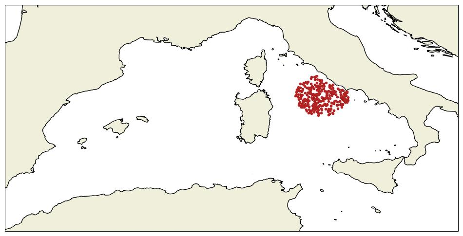
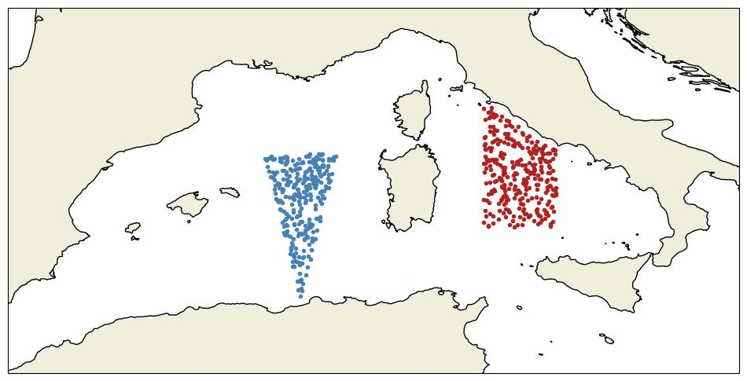
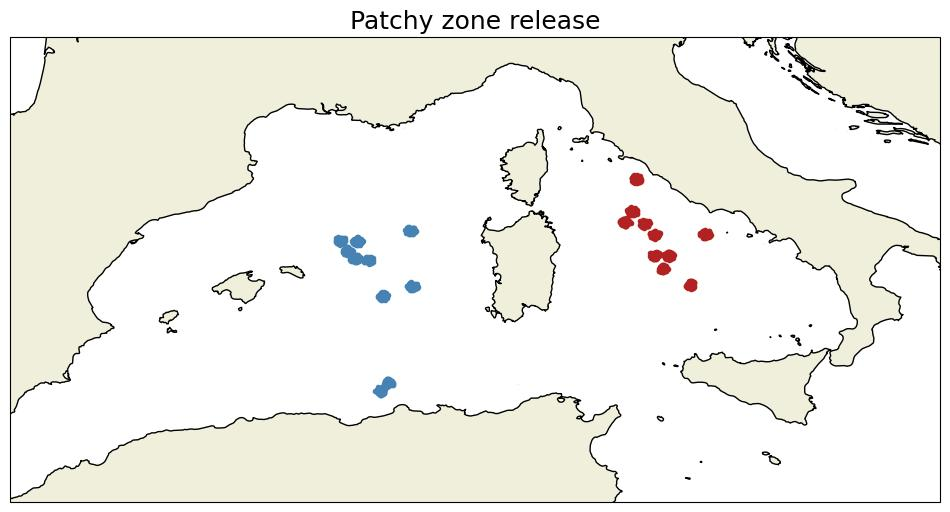
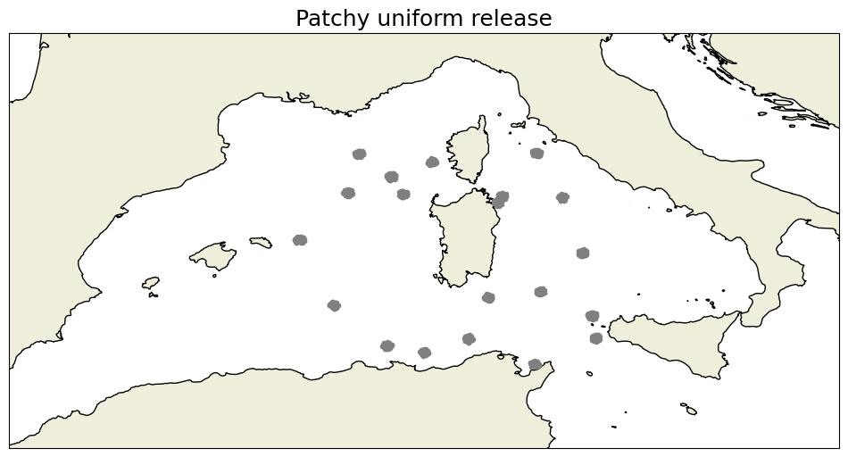
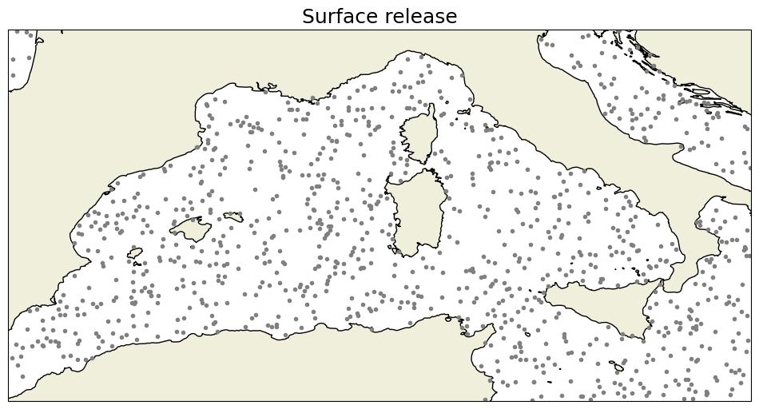

5 Particle release
In the present section, the different release processes that are implemented within Ichthyop are described. The parameters that are associated with the release processes must be included within release blocks (cf. Section 3.1).
5.1 Stain release
Main - Release Stain
The release stain consists in releasing particles within a given disk. The user provides the longitude and latitude of this disk center and its radius (in \(m\)), and the number of particles to release.
For a 3D simulation, the release stain becomes a cylinder and the user also has to provide the depth of the center of the cylinder and its height (both in \(m\)).
Particles are randomly distributed within a release stain (Figure 5.1)

5.2 Zone release
Advanced - Release - From zones
The zone release method allows to release particles in user-defined areas (see Section 2.1.3 and Section 3.2)
By default, the number of particles released in each zone (\(N_k\)) is equal to
\[ N_k = N_{tot} \times \dfrac{S_{k}}{\sum_{i=1}^{N}S_i} \]
with \(N_{tot}\) the total number of released particles, \(S_k\) the surface of the \(k^{th}\) release area and \(N\) the number of release areas.
The thickness of the area is not taken into account when computing the proportion of particles that will be released, only the horizontal surface
However, the user has the possibility to control the proportion of particles that is released in each zone.
For details on how to define release zones, see Section 2.1.3 and Section 3.2

5.3 Text release
Advanced - Release - Drifters from text file
Particles can also be released by providing a text file containing their release coordinates.
The file must be formatted as follows:
# 3D simulations
# longitude latitude depth
-5.45 48.30 -5
-5.45 48.30 -10
-5.45 48.30 -15
-5.45 48.30 -20Each line is a particle. Each character starting with # is considered as a comment. If the depth column is not provided, depth will be set to 0.
For 2D simulations, the depth column will be ignored.
Note that the columns must be separated by spaces.
5.4 Patchy release
Advanced – Release – Patches in zones
It is a combination of the stain release and zone release methods.
The patchy release method (PatchyRelease.java) can be viewed as an extension of the release stain method, where several stains are randomly created.
The number of stains and of particles per stain are provided. The radius and thickness (if 3D simulation) of each patch is also provided
Additionally, there is the possibility to release patches in each release zone. This is achieved by setting the per_zone parameter to true. An example is provided in Figure 5.3.
If this parameter is set to false, the bounding box around the defined release zones (if any) or the full domain is used to release the patches, as shown in Figure 5.4.


5.5 Surface and bottom releases
Advanced - Release - At bottom
The surface and bottom release methods allow to randomly release particles over the entire domain, either at the surface or at the bottom (for 3D simulations only).
The only parameter required by these methods is the number of particles. There is no control over the area where the particles are released.
An example of a surface release is shown in Figure 5.5.

5.6 Netcdf release
Advanced - Release - Restart model
Ichthyop also offers the possibility to use an Ichthyop output file as a simulation starting point. The location of the NetCDF file to use as a restart must be provided.
6 Release schedule
Advanced - Release - Schedule
There is also the possibility to schedule several release events as a list of release date strings, formatted as year YYYY month MM day DD at YY:MM.
The resulting output file will contain the same number of time-steps as in the case of a simple release, but the number of particles will be multiplied by the number of release events.
It is recommended to avoid using the release schedule feature and instead to change the value of the initial_time parameter (Section 3.3.1)
If the simulation duration to 30 days initial_time is set to year 2000 month 01 day 01 at 00:00 and your first release event is set to year 2001 month 01 day 01 at 00:00, Ichthyop will run without without any particles from 2000-01-01 to 2001-01-01
If the simulation duration to 30 days initial_time is set to year 2000 month 01 day 01 at 00:00 and your first release event is set to year 2001 month 01 day 01 at 00:00, the final time-step will occurs in 2001-01-30.